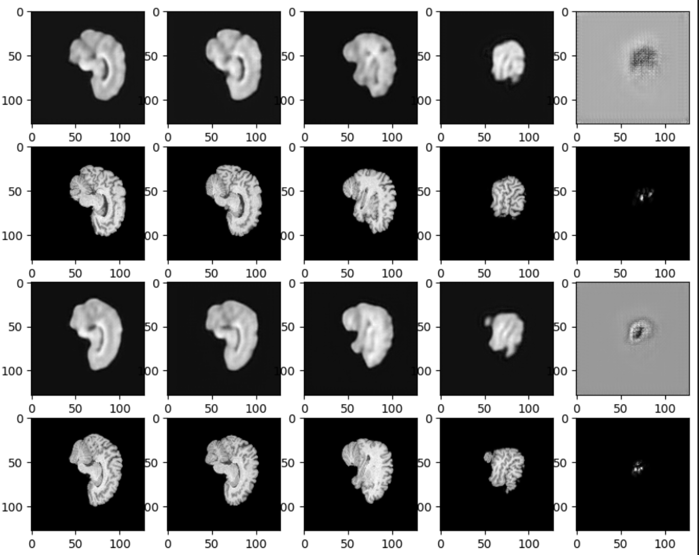
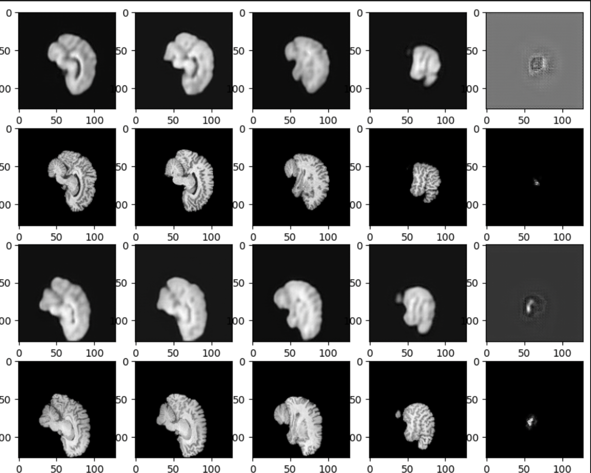
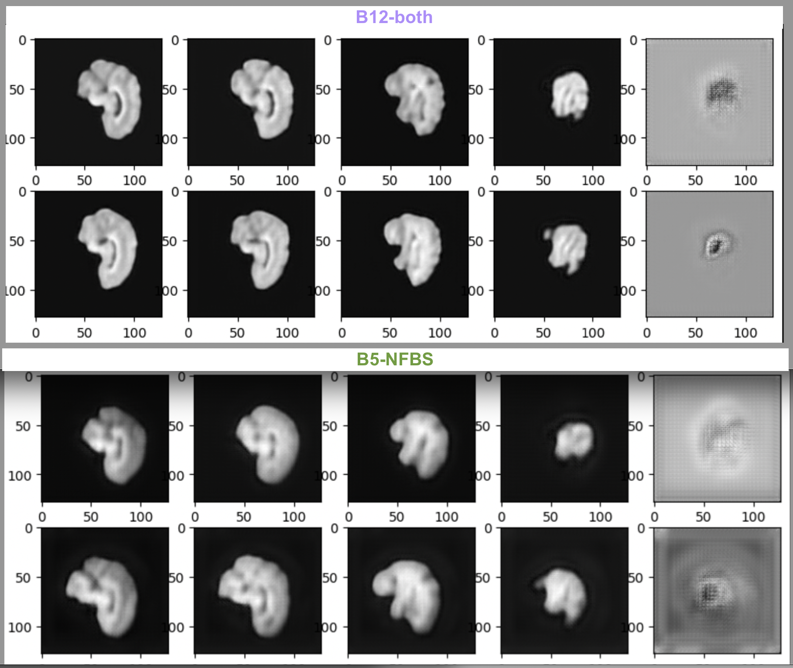
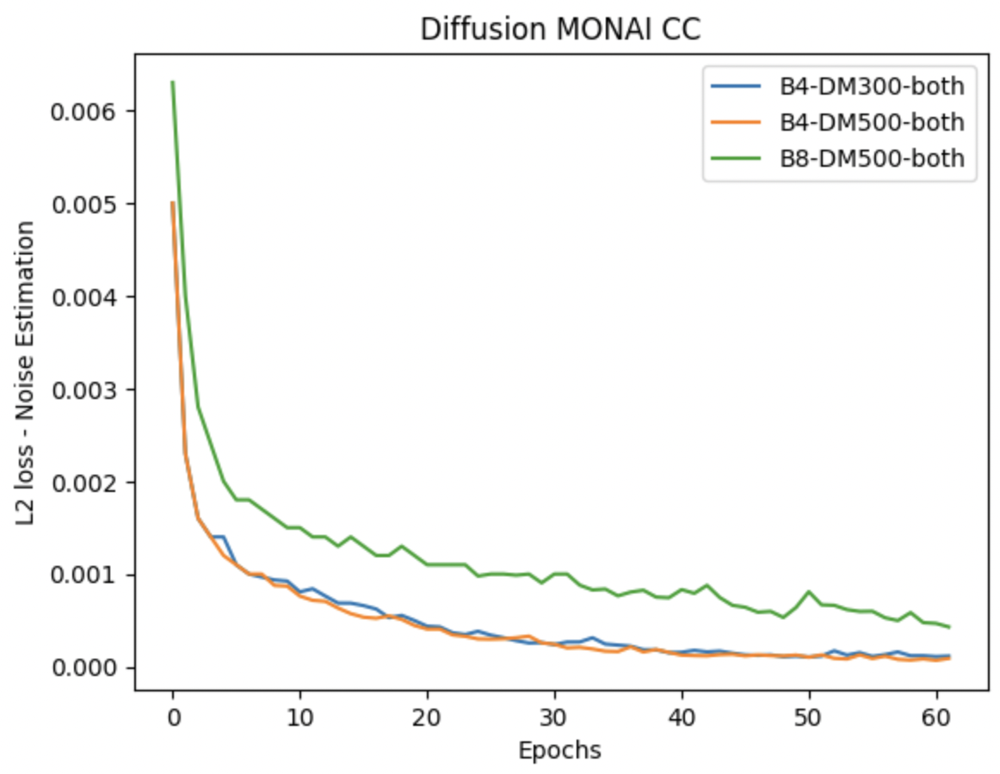
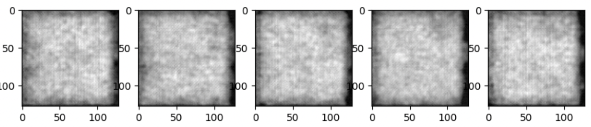

Finalized experiments using both datasets: Week 12 & Week13#
What I did this week#
Monai’s VQVAE results on T1-weighted NFBS dataset, 125 samples, for batch size of 5 were qualitatively and quantitatively superior to all previous results. I continued the same experiments on the T1-weighted CC359(Calgary-Campinas-359) public dataset consisting of 359 anatomical MRI volumes of healthy individuals. Preprocessed the data using existing transform_img function -
skull-strips the volume using the respective mask
dipy’s
resize& scipy’saffine_transformscale the volume to (128,128,128,1) shape & (1,1,1) voxel sizeMinMax normalization to limit the range of intensities to (0,1)
Using existing training parameters, carried out two experiments, one on CC359 alone & another on both datasets combined. Additionally, I made a slight modification in the loss definition by attributing different weights of 0.5 & 1 to background & foreground pixels compared to equal weights from previous experiments. This resulted in faster convergence as shown in the red, blue & purple lines in the combined plot shown below. (Naming convention for each training curve is B<batch_size>-<dataset_used>, where CC=CC359, NFBS=NFBS, both=[NFBS,CC359])
{kind=link}
Inference results on the best performing model, B12-both, is shown below, where every two rows correspond to reconstructions & original volumes respectively, with equally spaced slices in each row. These slices visualised are anterior-posterior topdown & ventral-dorsal LR.
{kind=link}
Here’s a similar visualization of the inference on the next best performing model, B12-CC.
{kind=link}
This shows that our training not only converged quickly but also improved visually. Here’s a comparison of our current best performing model i.e., VQVAE-Monai-B12-both & the previous one on NFBS i.e., VQVAE-Monai-B5-NFBS. The test reconstruction loss is 0.0013 & 0.0015 respectively.
{kind=link}
I also carried out Diffusion Model training on the best performing VQVAE-Monai-B12-both model for 300 & 500 diffusion steps and the training curves obtained are as follows-
{kind=link}
These curves seemed to converge pretty quickly but the sampling outputs in the generation pipeline are still pure noise as shown below-
{kind=link}
The best performance of KL encoders/VAEs/VQVAEs have been shown to deliver blurry reconstructions on Medical datasets. Despite using a pretty less complex VQVAE model, with only num_res_channels=(32, 64), we consistently achieved improved reconstruction results with every experiment. From capturing only the brain outer structure through VQAVE-B5-NFBS model to able to capture the volumetric details of the inner microstructure of the brain through VQVAE-Monai-B10-both model, we’ve stretched the capabilities of the VQVAE model.
For future work we should look into two things - debugging Diffusion Model, scaling VQVAE model.
As a first priority, we could analyze the reason for pure noise output in DM3D generations, this would help us rule out any implementation errors(although I already did that, a second pair of eyes would be helpful). Because MONAI’s work shows that even without a stable convergence on their diffusion model they achieved visualizations resembling a brain. Whereas our model despite achieving a stable looking training curve, our generations are not close to being convincing.
As a second step, we could also try scaling up both VQVAE as well as Diffusion Model in terms of complexity, such as increasing intermediate channel dimensions from 64 to 128 or 256 as done in MONAI’s 3D LDM. This hopefully may help us achieve the state-of-art on NFBS & CC359 datasets.
What is coming up next week#
Wrapping up documentation & final report
Did I get stuck anywhere#
Yes, I carried out debugging to understand the generation pipeline of the Diffusion Model. Cross-checked implementations of posterior mean & variance in the code base with respective formulas from the paper, as well as with MONAI’s DDPM implementation. Didn’t come across any error, yet the generated samples are erroneous.